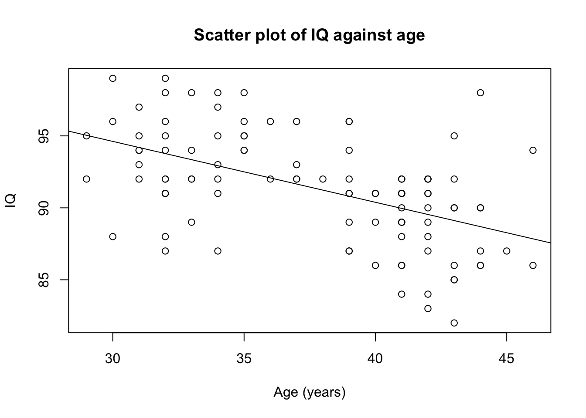
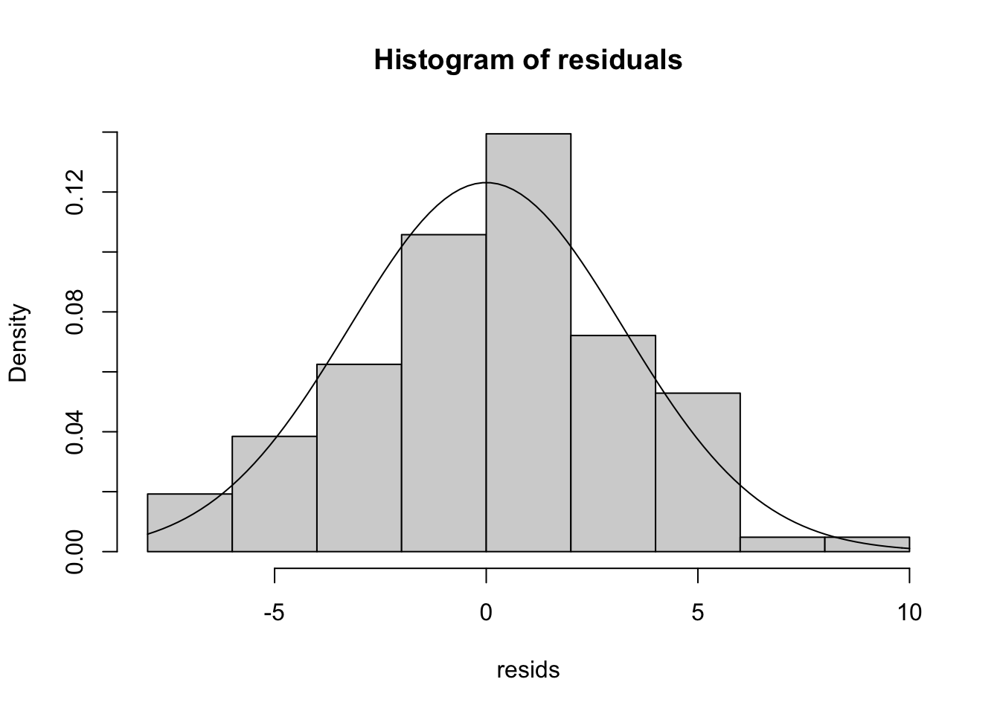

Module 8: Solutions to Learning Activities
Activity 8.1
To investigate the effect of body weight (kg) on blood plasma volume (mL), data were collected from 30 participants and a simple linear regression analysis was conducted. The slope of the regression was 68 (95% confidence interval 52 to 84) and the intercept was −1570 (95% confidence interval −2655 to −492).
- What is the outcome variable and explanatory (exposure) variable?
Because we want to know the extent to which body weight predicts blood plasma volume, weight is the explanatory variable and blood plasma volume is the outcome.
- Interpret the regression slope and its 95% CI
The regression slope is 68 which means that for every 1 kg increase in body weight, blood plasma volume is predicted to increase by 68 mL. The 95% confidence interval indicates that we are 95% confident that the true increase in blood plasma volume per 1 kg in body weight lies between 52 mL and 84 mL.
- Write the regression equation
The estimated regression equation is: Blood plasma volume (mL) = − 1570 + 68 × Body weight (kg)
- If we randomly sampled a person from the population and found that their weight is 80kg, what would be the predicted value of plasma volume for this person?
By substituting the value of 80 kg into the above equation we can predict that the person’s blood plasma level will be: Blood plasma volume = − 1570 + (68 × 80) = 3870 mL.
Therefore, the predicted plasma volume of a person who is 80 kg is 3870 mL.
Activity 8.2
To examine whether age predicts IQ, data were collected on 104 people. Use the data in the Stata file Activity_8.2.dta to answer the following questions.
- What are the outcome variable and the explanatory variable?
We are examining whether age predicts IQ, not the other way around. Therefore, age is the explanatory variable and IQ is the outcome variable.
- Create a scatter plot with the two variables. What can you infer from the scatter plot?
The plot shows that as age increases, IQ decreases. In other words, there is a negative relationship between the two variables. The relationship appears roughly linear, but is not strong (the points are quite scattered around the line of best fit).
Figure 1: Scatter plot of IQ against age (years)
iq <- readRDS("data/activities/Activity_S8.2.rds")
plot(iq$age, iq$iq,
main="Scatter plot of IQ against age",
xlab = "Age (years)",
ylab = "IQ")
abline(lm(iq$iq ~ iq$age))
- Using R, obtain the correlation coefficient between age and IQ and interpret it.
To obtain the correlation coefficient, we use the
cor.test()function:
R Output 1: Correlation coefficient between IQ and age
cor.test(iq$age, iq$iq)##
## Pearson's product-moment correlation
##
## data: iq$age and iq$iq
## t = -6.2429, df = 102, p-value = 9.952e-09
## alternative hypothesis: true correlation is not equal to 0
## 95 percent confidence interval:
## -0.6523298 -0.3707534
## sample estimates:
## cor
## -0.5257982The correlation coefficient is −0.526 indicating that as age increases, IQ decreases, which is consistent with the scatter plot. The P value is <0.0001, indicating that there is very strong evidence of a negative linear association between IQ and age, and the strength of that relationship is fair (based on the descriptions given in Section 8.2.1 of the course notes).
- Conduct a simple linear regression using R and report the relationship between the two variables including the interpretation of the R-squared value. Are the assumptions for linear regression met in this model?
We use the
lm()function to regressiq(as the outcome variable) onage(the explanatory variable). To obtain more descriptive output, we save the model as an object, calledmodelhere, and then use thesummary()function. Finally, confidence intervals for the intercept and slopes are obtained using theconfint()function.
R Output 2: Simple linear regression of IQ on Age
model <- lm(iq$iq ~ iq$age)
summary(model)##
## Call:
## lm(formula = iq$iq ~ iq$age)
##
## Residuals:
## Min 1Q Median 3Q Max
## -7.1164 -1.9364 0.2843 2.0367 9.3070
##
## Coefficients:
## Estimate Std. Error t value Pr(>|t|)
## (Intercept) 107.32431 2.57770 41.636 < 2e-16 ***
## iq$age -0.42344 0.06783 -6.243 9.95e-09 ***
## ---
## Signif. codes: 0 '***' 0.001 '**' 0.01 '*' 0.05 '.' 0.1 ' ' 1
##
## Residual standard error: 3.255 on 102 degrees of freedom
## Multiple R-squared: 0.2765, Adjusted R-squared: 0.2694
## F-statistic: 38.97 on 1 and 102 DF, p-value: 9.952e-09confint(model)## 2.5 % 97.5 %
## (Intercept) 102.2114610 112.4371606
## iq$age -0.5579735 -0.2889048The Model Summary table shows the R-squared value of 0.2765. This indicates that 27.6% of the variation in IQ in the sample can be explained by variability in age.
The coefficients section provides the regression coefficients: an estimated intercept of 107.324 and an estimated slope of -0.423.
The equation is estimated as: IQ = 107.324 + (−0.423 × age)
The assumptions for simple linear regression are:
- the observations are independent of one another;
- the relation between the explanatory variable and the outcome variable is linear;
- the residuals are normally distributed.
Information on the first assumption come from the study design. It is not mentioned in the study description that the data were collected on more than one occasion from each participant or that the participants are related to one another in any ways. Therefore, the observations are independent of one another.
Evidence on the second assumption of a linear relationship between the outcome and explanatory variables is obtained from the scatterplot. Figure 1 demonstrates a linear relationship between age and IQ and so this assumption is also satisfied.
To check the third assumption, that the residuals are normally distributed, we need to first generate and save the residuals in a new object. In R, we can save the residuals using the
resid()function:
resids <- resid(model)To check the assumption, we need to examine the distribution of the residuals using a histogram. The histogram is shown in Figure 2. The histogram shows that the residuals are fairly normally distributed without any remarkable outliers. Therefore, the third assumption is also met.
Figure 2: Distribution of residuals from the regression of IQ on age
hist(resids, probability =TRUE,
main = "Histogram of residuals")
curve(dnorm(x,
mean=mean(resids),
sd=sd(resids)), add = TRUE)
- What could you infer about the association between age and IQ in the population, based on the results of the regression analysis in this sample?
This study provides very strong evidence that IQ is negatively associated with age (t=–6.24 with 102 df, P<0.001). For every year increase in age, we predict a 0.42 unit decrease in IQ and we are 95% confident that the true decrease in IQ lies between 0.29 to 0.56 units. Variability in age explains 27.6% of the variability in IQ.
Activity 8.3
Which of the following correlation coefficients indicates the weakest relationship and why? a) r=0.72 b) r=0.41 c) r=0.13 d) r = −0.33 e) r = −0.84
Answer: c.
r = 0.13 which is closest to 0. Note that this only relates to the strength of a linear relationship.
Activity 8.4
Are the following statements true or false?
- If a correlation coefficient is closer to 1.00 than to 0.00, this indicates that the outcome is caused by the exposure.
False: Correlation cannot tell you about causation; it can only tell you if a relationship or association exists between 2 variables.
- If a researcher has data on two variables, there will be a higher correlation if the two means are close together and a lower correlation if the two means are far apart.
False: Correlation is not determined by the means of the variables. Correlation only indicates whether the value of one variable increases as the value of the other variable increases or decreases (in a linear way).